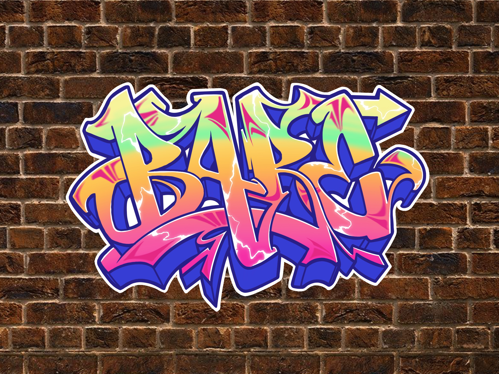

BARE Magazine Sticker
A graffiti-inspired sticker for guerrilla placement around campus.
BARE is a student arts and culture magazine at UC Berkeley. Working with the magazine’s promotional team, I created a custom sticker inspired by the strong graffiti and urban art culture of the Berkeley area, designed to be placed in highly visible, heavily graffitied areas with large amounts of traffic.
The graffiti concept connects to Berkeley’s artistic roots in rebellious expression and counter-culture, and BARE’s 4-lettered name lends itself as an ideal graffiti “tag.” Working on this project allowed me to practice coupling a creative concept with a practical and effective advertising strategy.
